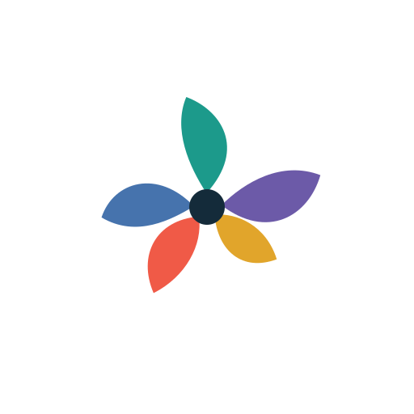

アプリ開発
現場に合った、使いやすいアプリやサービスをつくります。

株式会社でたらめ 無料で相談するFOR KOKA CITY BUSINESS
甲賀市の事業者さまへ
「こんなことができたら」を、まず聞かせてください。
株式会社でたらめは、甲賀市に根ざして一緒に考える、まちのDX屋さんです。
DOES THIS SOUND FAMILIAR?
本当はお客さまのために、もっと時間を使いたい。新しいことにも挑戦したい。けれど、日々の事務作業や情報整理に追われてしまう。
デジタル化が気になっていても、何から始めたらよいのか、誰に相談すればよいのかわからない。そんなお悩みからで大丈夫です。
WHAT WE CAN DO
現場に合った、使いやすいアプリやサービスをつくります。
あなたの想いや魅力がきちんと伝わる、育てていけるWebサイトへ。
繰り返す作業や属人化した仕事を見直し、時間を取り戻します。
AIを無理なく仕事に活かす方法を、現場に合わせて一緒に考えます。
OUR APPROACH
私たちの強みは、オーナーさまの「やりたい」に寄り添い、丁寧に聞き取ることです。
今の仕事や、これから叶えたいことを伺いながら、課題を一緒に見つけます。
初めから大きな開発を前提にせず、本当に必要なことだけをご提案します。
目的・費用・進め方にご納得いただいたうえで、一緒に形にしていきます。
LIMITED OFFER
甲賀市の方限定
通常の開発費 半額
サービス開発の過程を公開させていただくことを条件に、通常の開発費の半額でサービスを開発いたします。
まずは「こんなことをしたい」というお話を、気軽にお聞かせください。
FREE CONSULTATION
「相談するほどのことかわからない」でも大歓迎です。
甲賀市で事業を営むみなさまからのご連絡を、お待ちしています。